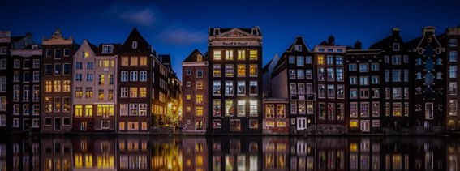
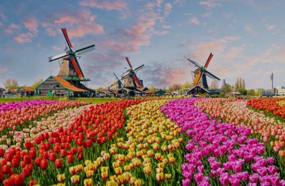

Una ciudad rica en historia, cultura, naturaleza y diversión, un lugar
de bicicletas, de colores, de locos por el queso y con vecinos amables,
emprendedores y sonrientes. Si fuesen una ciudad estaría llena de barrios,
grandes y pequeños,todos y cada uno de ellos únicos y con personalidad
propia: el barrio de Ámsterdam, vivo, extrovertido y con alma rebelde;
el barrio de Rotterdam, cosmopolita, urbano y con su amor infinito por
el mar; el barrio de La Haya elegante e institucional; o el barrio de Maastricht, de alma romántica.